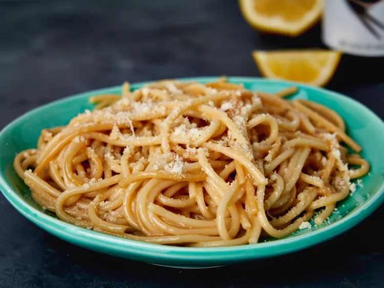

Lemon Parmesan Pasta

Description
Ingredients
- 1 tablespoon kosher salt
- 4 ounces pasta
- 3 tablespoons butter
- 1 teaspoon soy sauce
- 1 teaspoon freshly squeezed lemon juice
- 2 tablespoons grated Parmesan Cheese
Steps
-
Bring a pot of water to a boil. Add salt and pasta and cook until pasta
is tender with a bite, about 10 minutes. Drain.
-
Return pasta to the pot; stir in butter, soy sauce, lemon juice, and
Parmesan cheese until creamy. Serve immediately.